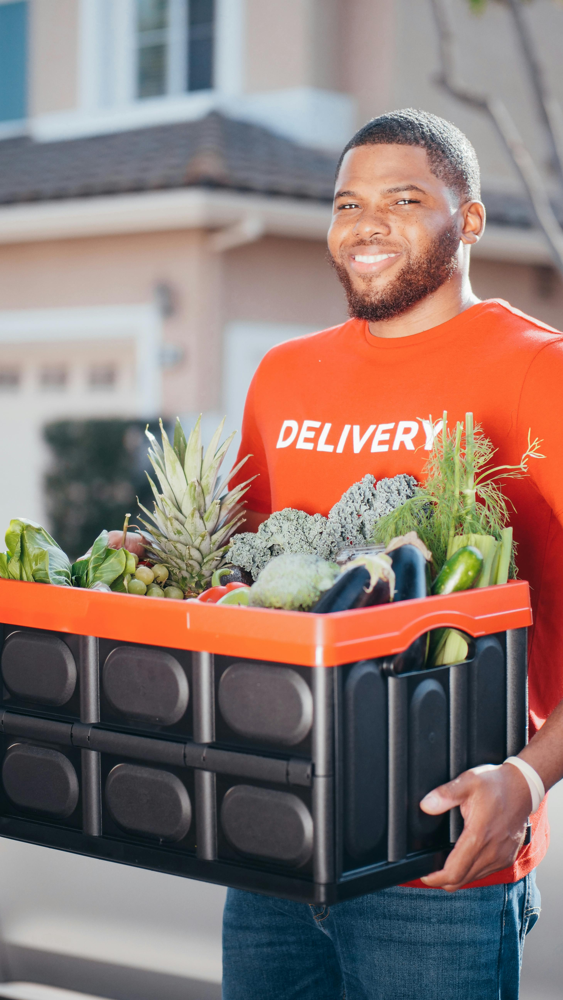
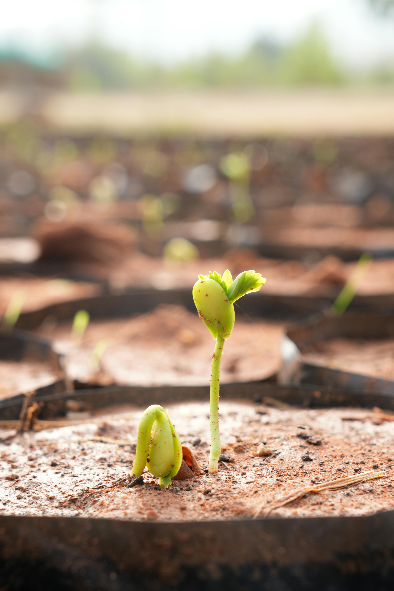

A Ponte Verde nasceu para aproximar produtores rurais de restaurantes, mercados, hotéis e empresas que valorizam alimentos frescos, de qualidade e com origem confiável.
Acreditamos em um agro mais justo, sustentável e eficiente, onde todos ganham: quem produz, quem compra e quem consome.
Mais que uma plataforma, somos uma ponte de confiança, tecnologia e oportunidades.

Conectar o campo e os negócios de forma direta, digital e eficiente, gerando valor para toda a cadeia agroalimentar.
Ser a principal plataforma do Brasil que impulsiona o agro, promovendo desenvolvimento, tecnologia e sustentabilidade.
A Ponte Verde surgiu da vivência no agro e da dor de ver bons produtos enfrentando barreiras até chegar a quem precisa deles.
Decidimos usar a tecnologia para encurtar caminhos, reduzir intermediários e criar oportunidades reais para milhares de produtores e empresas.
Esse é só o começo de uma grande transformação.

Nosso propósito é fortalecer o agro e alimentar relações que geram valor para o Brasil.
Pessoas apaixonadas pelo agro e por transformar realidades.